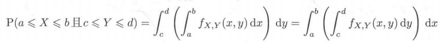
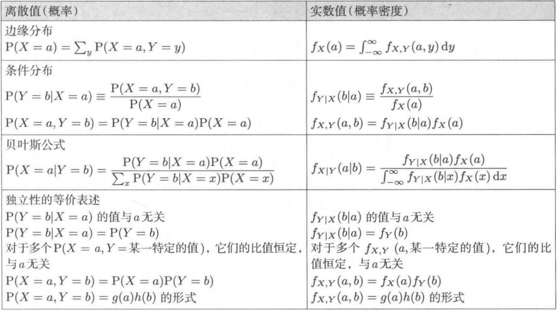

《程序员的数学1》 -结城浩
《程序员的数学2》 -结城浩
1. 条件概率
条件概率面积解释：P(Y=b|X=a) = P(Y=b, X=a)/P(X=a)，a中b的比例(given a, b's percent) = a中b的面积(联合概率) / a的总面积(边缘概率)
条件概率显然结论：P(Y=b0|X=a)+P(Y=b1|X=a)+...+P(Y=bn|X=a) = 1，b0...bn是所有Y的取值
贝叶斯作图：把总概率画成边长为1的正方形，把各种已知条件转化为面积画在图中，根据面积求解问题
贝叶斯公式：P(Y=b|X=a) = P(Y=b, X=a)/P(X=a) = P(X=a, Y=b)/P(X=a)
= P(X=a|Y=b) * P(Y=b)/(P(Y=b0, X=a) + ... + P(Y=bn, X=a))事件独立性：X=a与Y=b独立 -> P(X=a, Y=b) = P(X=a) * P(Y=b)
2. 排列组合
排列(Permutation)：从n个人中选出k人排成一列，A(n, k) = n! / (n - k)!
组合(Combination)：从n个人中选出k人排成一列，不关心顺序，C(n, k) = A(n, k)/k! = n! / ((n - k)! * k!)
3. 期望/方差
期望值(Expectation)：期望值理解为体积，高度即值k, 面积即P[X=k], E[X] = k0 P[X=k0] + ... + kn P[X=kn]; E[X + c] = E[X] + c; cE[X] = c * E[X]; E[X + Y] = E[X] + E[Y]
方差(Variance)：V[X] = E[(X - u)^2], u = E[X]; V[X + c] = V[X]; V[c X] = c^2 V[X]
标准差(Standard deviation)：S[X]^2 = V[X]
V[X] = E[X^2] - E[X]^2
条件方差：V[Y|X=a] = E[(Y-u(a))^2 | X=a], u(a) = E[Y|X=a]
4. 连续值概率
微分：书中以f(x)表示打印油墨的密度，F(x)表示打印油墨的使用量，x表示打印油墨的长度，f(x) = dF(x)/dx
积分：$\int_a^bf(x)dx = F(b) - F(a)$
连续值概率密度：f(X=x) = dF(X=x)/dx, F(X=a) = P(X<a)即直到a处的概率之和，f(X=x)的值越大，表示x附近的概率越浓，x附近的值出现的概率越大。因此，$P(a<x<b) = \int_a^bf(x)dx$
均匀分布， f(x) = 1/(b - a)
联合分布： 
离散概率 vs 连续概率： 
正态分布/中心极限定理
5. 协方差/多元正态分布
协方差(Covariance)：Cov(X, Y) = E[(X-u)(Y-v)], u = E[X], v = E[Y]，表明X与Y的相关性
多元正态分布
卡方分布
6. 估计与检验
最小方差无偏估计
最大似然估计
贝叶斯估计
7. 伪随机数
8. 概率论的各类应用
最小二乘拟合直线
随机游走
卡尔曼滤波器
马尔可夫链
熵
信道编码